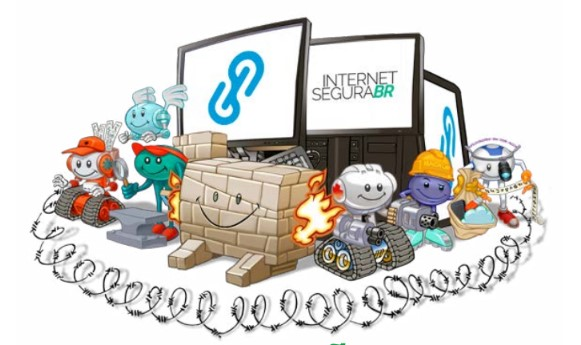

Aqui vai algumas dicas
Cuidado com Phishing e Engenharia Social
E-mails e sites falsos: Esteja atento a e-mails e sites que solicitam informações pessoais. Verifique a autenticidade antes de fornecer qualquer dado. Links suspeitos: Não clique em links suspeitos recebidos por e-mail, mensagens de texto ou redes sociais.
